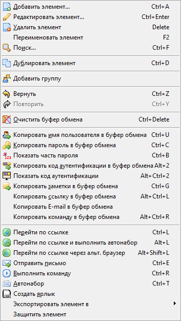
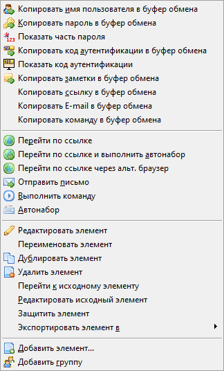
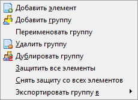

| Элемент | Псевдоним | Группа | ||
|  |  | |
Используя меню Правка вы можете добавлять, редактировать, использовать и упорядочивать имена пользователей и пароли. Обратите внимание, что состав меню зависит от того, что сейчас выбрано в списке (элемент, псевдоним или группа). Кроме того, как указано ниже, некоторые элементы могут быть недоступны.
Добавление нового имени и пароля. Недоступно, если контейнер открыт в режиме «только чтение».
Для получения дополнительной информации см. Имена пользователей, пароли и группы.
Если выбран элемент, открывает диалог редактирования текущей записи. Если при древовидном просмотре выбрана группа, сворачивает или разворачивает список элементов для текущей группы. Редактирование заблокировано, если контейнер открыт в режиме «только чтение».
Для получения дополнительной информации см. Имена пользователей, пароли и группы.
Если выбран элемент, он будет удалён. Если в древовидном списке выбрана группа, то группа и все элементы внутри неё будут удалены. При удалении группы из нескольких элементов выдаётся запрос подтверждения. Пункт заблокирован, если контейнер открыт в режиме «только чтение».
Изменение имени элемента или группы (при древовидном просмотре). Пункт заблокирован, если контейнер открыт в режиме «только чтение».
Поиск элемента, содержащего указанный текст. По умолчанию поиск производится по всем полям, за исключением пароля.
Для получения дополнительной информации см. Поиск указанного текста.
Создание дубликата выбранного элемента. Пункт заблокирован, если контейнер открыт в режиме «только чтение».
Создание новой группы (например, «Пароли для банковских систем»). Пункт заблокирован, если контейнер открыт в режиме «только чтение».
Отмена последнего действия. При повторных нажатиях отмена производится в обратном порядке (от последнего действия к первому).
Последнее отменённое действие (действия) будет выполнено снова.
Очистка содержимого буфера обмена. Из буфера удаляются все данные, помещённые туда Password Safe (имена, пароли, заметки, ...). Не оказывает действия, если содержимое буфера не принадлежит Password Safe.
Копирование пароля выбранного элемента в буфер обмена.
При выборе данного пункта отображается окно, позволяющее задать символы, которые необходимо показать. Данная функция может быть полезна для сайтов, требующих ввода части пароля. Например, вас могут попросить ввести первый, третий, пятый и восьмой символы. В верхнем поле нужно указать позиции необходимых символов. В качестве разделителя можно использовать пробелы, запятые и точки с запятой. Соответствующие символы будут показаны в нижнем поле. Выход производится по кнопке Esc.
Копирование имени пользователя из текущего элемента в буфер обмена.
Копирование содержимого заметок из текущего элемента в буфер обмена.
Копирование ссылки, связанной с текущим элементом, в буфер обмена.
Копирование E-mail, связанного с текущим элементом, в буфер обмена.
Копирование команды для текущего элемента в буфер обмена.
Примечание. Значение переменных не будет подставлено, если при выборе пункт меню был нажат Ctrl.
Если для текущего элемента указана ссылка, открывает её в браузере по умолчанию. Пункт меню недоступен, если элемент не выбран, или для него не задана ссылка.
Если в диалоге Сервис→Настройки→Безопасность не указано иное, пароль автоматически копируется в буфер обмена.
Если для текущего элемента указана ссылка, открывает её в браузере по умолчанию. Пункт меню недоступен, если элемент не выбран, или для него не задана ссылка.
Автоматически вводит имя пользователя и пароль в выбранные поля.
Для получения дополнительной информации см. Автонабор.
Подготовка нового письма по данным, указанным в поле E-mail. Перед использованием убедитесь, что на компьютере установлен почтовый клиент.
Для получения дополнительной информации см. Имена пользователей, пароли и группы.
Автоматически вводит имя пользователя и пароль в выбранные поля.
Для получения дополнительной информации см. Автонабор.
Запуск команды, указанной в поле Выполнить текущего элемента.
Для получения дополнительной информации см. Выполнение команд.
Если выбран элемент, позволяет создать ссылку на этот элемент (обычно в другой группе). Ярлыки удобно использовать если элемент «принадлежит» к нескольким группам, но вы не желаете дублировать данные. Для отображения ярлыков используется другой значок ( ) и, по умолчанию, имя имеет вид «ярлык для x», где x — имя исходного элемента. Как и в случае с обычным элементом, ярлык можно будет переместить, удалить или переименовать.
) и, по умолчанию, имя имеет вид «ярлык для x», где x — имя исходного элемента. Как и в случае с обычным элементом, ярлык можно будет переместить, удалить или переименовать.
Данный пункт отображается только для ярлыков и псевдонимов. После выбора пункта Перейти к исходному элементу происходит переход к соответствующему исходному элементу.
Данный пункт отображается только для ярлыков и псевдонимов. После нажатия Редактировать исходный элемент вы сможете произвести изменения в соответствующем исходном для выбранного ярлыка или псевдонима элементе.

Выбранный элемент (все элементы выбранной группы) экспортируются в текстовый файл. Для подтверждения экспорта данных в незашифрованный файл, будет предложено ввести мастер-пароль.
Выбранный элемент (все элементы выбранной группы) экспортируются в файл формата XML. Для подтверждения экспорта данных в незашифрованный XML файл, будет предложено ввести мастер-пароль.
Выбранный элемент (все элементы выбранной группы) экспортируются в новый контейнер Password Safe. Для подтверждения экспорта данных в другой контейнер Password Safe, будет предложено ввести мастер-пароль. Также потребуется указать пароль для нового контейнера Password Safe.
Для получения дополнительной информации см. Экспорт элементов.
Выбранный элемент или группа элементов будут защищены. Защищённый элемент не может быть изменён. Защищённые элементы отмечены символом «#».
Все функции меню Правка доступны через контекстное меню (при нажатии правой кнопкой мыши) элемента, псевдонима или группы.
В контекстном меню исходных элементов для псевдонимов и ярлыков есть дополнительное подменю для быстрого доступа к подчинённым элементам («Перейти к псевдониму...» и «Перейти к ярлыку...» соответственно). Всё подчинённые элементы будут перечислены в указанном подменю, но некоторые из них могут быть недоступны, например, если активен фильтр и они не соответствуют условиям отбора, или если их более 25 (максимум для данного функционала).
| Элемент | Исходный элемент для псевдонима | Исходный элемент для ярлыка | Псевдоним | Группа | ||||
 |
 |
 |
 |
 |
Все функции описаны в предыдущем разделе.